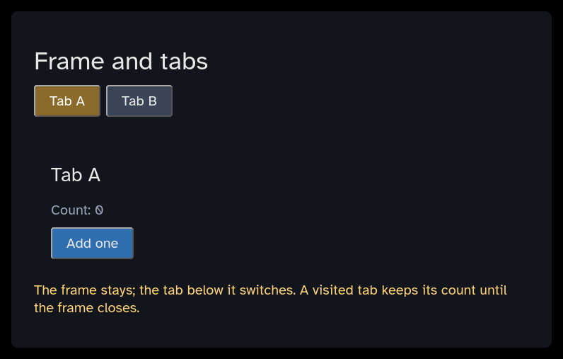

Frames and tabs¶
Use a frame with tabs for a hub screen whose pages are separate documents shown one at a time in the same place.
The FrameTabs sample is a frame document with two buttons and an arc-embed box, and two tab documents, TabA and TabB,
shown in the box one at a time. Each tab counts "Add one" presses, and the count is still there after you switch away and
back. Run it with ArcRmlSamples.Open FrameTabs in the map L_ArcRmlSamples (Samples).

The frame and its tabs¶
A tab names its frame in its head, the <head> block of its document (Documents). The frame holds one arc-embed element, the box the shown tab is drawn in.
<meta name="frame" content="/ArcRmlUISamples/UI/Rml/FrameTabs/Frame.rml"/>
<div class="ft-embed" arc-embed=""></div>
- Opening a tab opens its frame when it is not open yet and shows the tab in the frame. Opening the frame by its own path shows the first listed tab.
- A tab is drawn inside its frame, so the frame decides its layer and its
input mode. A document with a
framemeta takes no other<meta>thaninput-mappingandinput-mapping-priority(Documents); another one is reported as an error. - The frame must give
arc-embeda size; the sample setsheight: 200pxon.ft-embedinFrame.rcss. - A frame cannot have a frame.
- In your own project, open a tab like any document (Open and close): the Open Document
node or
OpenDocumentwith the path of the tab opens its frame too. Close the frame, not a tab, with Close Document orCloseDocument.
Switching tabs¶
Switching is an ordinary OpenDocument of the other tab. The frame's two buttons call the view model; ShowTab takes the
WorldContextObject the call fills with the player controller (Events).
<button id="ft-show-a" class="ft-tab" autofocus="" data-attrif-selected="Shown == 0" data-event-click="call('', 'ShowTab', 0)">Tab A</button>
<button id="ft-show-b" class="ft-tab" data-attrif-selected="Shown == 1" data-event-click="call('', 'ShowTab', 1)">Tab B</button>
void UArcRmlSamplesFrameTabsFrameViewModel::ShowTab(UObject* WorldContextObject, int32 Index)
{
const APlayerController* Player = Cast<APlayerController>(WorldContextObject);
const ULocalPlayer* LocalPlayer = Player ? Player->GetLocalPlayer() : nullptr;
UArcRmlViewportSubsystem* Viewport = LocalPlayer ? LocalPlayer->GetSubsystem<UArcRmlViewportSubsystem>() : nullptr;
if (!Viewport || Index < 0 || Index >= UE_ARRAY_COUNT(ArcRmlSamplesFrameTabs::Tabs))
{
return;
}
if (Viewport->OpenDocument(ArcRmlSamplesFrameTabs::Tabs[Index]))
{
UE_MVVM_SET_PROPERTY_VALUE(Shown, Index);
}
}
The code above is an excerpt: Tabs is the array of the TabA and TabB document references in the same file, and
Shown only drives the selected look of the buttons. ArcRmlSamplesFrameTabs::Open opens TabA and returns the frame, since
the frame stays open while the tabs switch and is the document to close.
Tabs stay once visited¶
A tab you leave is hidden, not closed. Its view model, scroll, field text and data-if state stay until the frame closes;
showing it again does not create it again, so Count keeps its value. Closing the frame drops every tab, and the next open
starts at 0. A hidden tab is not open: IsDocumentOpen is false for it, and an open of it shows it.
Models and styles¶
- The frame's model (
frame) and the tabs' models (taba,tabb) have different names. Acall()goes to the tab model with that name, else to the frame. A tab may not declare a name that a kept tab declares differently: it is not embedded and the log reportscannot open: view model 'x' is declared differently by the kept tab 'y'. - The two tabs use one view model class under two names, so each has its own count.
- A tab may not declare a view model name its frame declares. The log says
cannot open: view model 'x' is also declared by its frame 'y'. - A tab's
input-mappingis an error when the frame'sinput-modeisgame, or when the frame uses the same mapping: the tab still opens, but its mapping is not added. - A tab is isolated like a page in an
<iframe>: it looks as the same document opened alone at the size of the box. - No frame rule matches inside a tab and no tab rule outside it. Inherited and custom properties start from their initial values at the tab.
- So a tab links its own style sheets: each FrameTabs tab links
Samples.rcssand its ownTab.rcss, and a:rootorhtmlrule in a tab sheet refers to the tab.
Limits
- A
data-ifon the frame that rebuilds thearc-embedelement drops the kept tabs and embeds the shown one again.